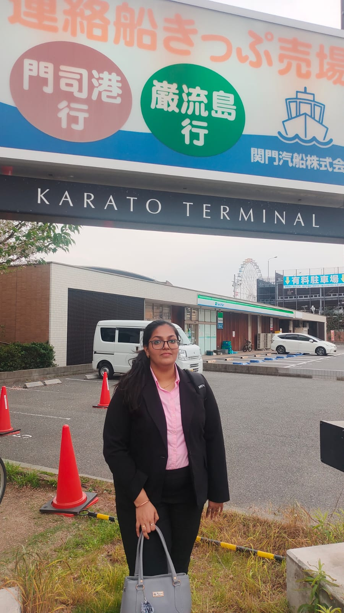

|
Nirali Sanghvi
My name is Nirali Sanghvi, and I am a PhD research scholar in the Department of Computer Science and Engineering at the Indian Institute of Technology Roorkee under the guidance of Prof. Rajdeep Niyogi. I am passionate about robots, robotic systems, and multi-robot systems, particularly focusing on developing algorithms to enhance communication in multi-robot systems (MRS) and formally verifying these algorithms.
I received my Bachelor's Degree from V.V.P Engineering College, Rajkot, in 2022.
I love reading, travelling, and playing badminton in my spare time. I am enthusiastic about creating a significant impact through collaborations, striving to make the world a better place where humans and robots can coexist and live efficiently.
Email /
CV /
Google Scholar /
LinkedIn
|

|